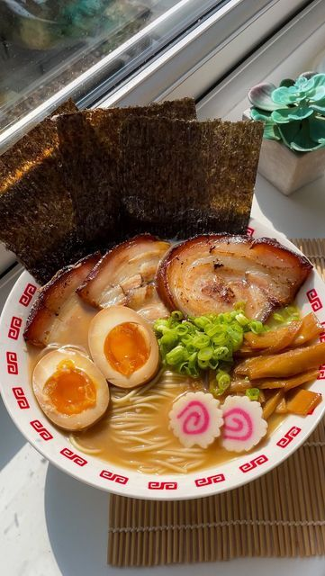

<!DOCTYPE html>
<html></html>
<head>
    <title>Gourmet Gallery</title>
    <link rel="stylesheet" href="style.css">
</head>
<body class="body-recipes">
     <h1>Gourmet Gallery</h1>
    <div class="header">
        <a href="meals.html">
            
        </a>
    </div>
<div id="recipe">
    <div class="recipe-details">
        
        <h1>Ichiraku Ramen</h1>
    </div>
    <div class="recipe-details-info">
        <p><b>Prep time:</b>  30 mins </p>
       <p style="float: right;"><b>Price:</b> R270 </p><br>
        <p style="float: none;"><b>Size:</b> Large </p>
    </div>
    <div class="recipe-details-ingredients">
        <h2>Extras</h2>
        <input id="check-01" type="checkbox">
        <label for="check-01">StarberryMilkshake</label>
        <br>
        <input id="check-02" type="checkbox">
        <label for="check-02">Chocolate kit kat Milkshake </label>
        <br>
        <input id="check-03" type="checkbox">
        <label for="check-03">Red valert cake</label>
        <br>
        <input id="check-04" type="checkbox">
        <label for="check-04"> oreo Milkshake</label>
    </div>
    <div class="recipe-details-ingredients">
        <h2>details</h2>
        <ol>
            <li>chiraku Ramen is a fictional restaurant in the anime and manga series Naruto and is also used to refer to a type of miso-tonkotsu
                 ramen. The real-world Ichiraku Ramen restaurant in the story, founded by Teuchi, serves fresh ramen with various toppings,
                  including chashu, boiled eggs, and naruto maki (fish cake). The ramen is characterized by a rich, creamy tonkotsu 
                    pork bone broth and a lighter, savory miso flavor.   </li>
            
        </ol>
    </div>
     <button style="font-size: 20px;background-color: teal;color: lavender;border-radius: 25px;">Place order</button>
    </div>

</div>     
</body>
</html>
